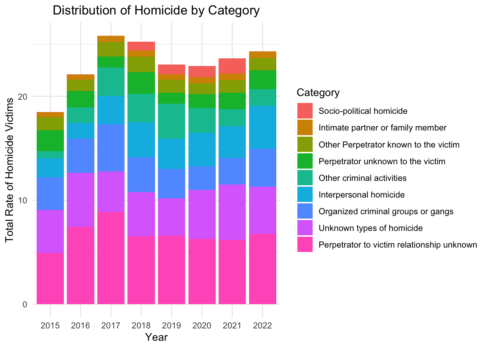
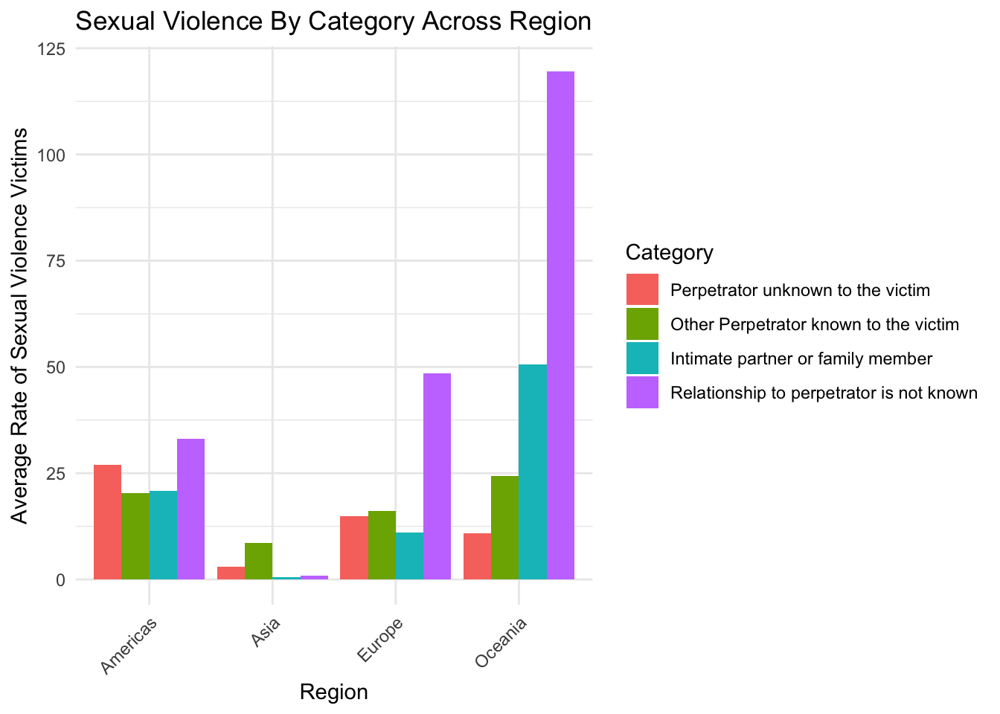

P8105 Final Project: Determinants of Global Violence
My An Huynh, Jeffrey Lin, Soo Min You, Hyun Kim, Malika Top
Motivation
Globally, violence undermines social and economic development, with its impacts being more pronounced in “developing” countries. Communities lacking adequate resources or experiencing systemic inequities are more vulnerable to various health challenges, including violence. Factors that influence health also play a role in shaping violence, which in turn affects determinants such as housing, education, transportation, and economic conditions. This project seeks to explore the factors driving serious assault, sexual violence, and intentional homicide worldwide from 2015 to 2023.
Selected this time frame because it includes significant global events, including the COVID-19 pandemic and various conflicts, which have greatly influenced patterns of violence. Also, even though there are a lot of missing data for year 2023, we decided to include the year because this time period provides insight into the contemporary factors shaping violence worldwide.
Initial Questions
- How can we best predict violence and homicide rates (i.e. what are its indicators)?
- How do rates of indicators compare across global regions and countries?
- How do rates of violence and homicide compare across global and regions and countries?
- What categories of violent are most prevalent?
Data: Source, Scraping Method & Cleaning
Source
Our data comes from 4 primary sources:
- United Nations Development Program (UNDP)
- United Nations Office of Drugs and Crime
- World Bank
- World Heath Organization
Our outcome variables of interest:
*Intentional homicide: - counting unit: number of homicide victims
per 100,000 population - classification: - situational context:
organized crime, interpersonal (excluding familial/intimate),
- socio-political - relationship to perpetrator: intimate partner,
family member, friend, colleague, etc. - mechanism: firearm, weapon,
physical force
- Violent and sexual crimes:
- counting unit: number of individual offences per 100,000 population
- classification of offenses:
- rape
- serious assault
- kidnapping
- sexual violence
Our predictor variables of interest:
- United Nations Development Program (UNDP):
- Human Development Index: geometric summary measure of longevity, being knowledgeable, and having decent standard of living
- United Nations Office of Drugs and Crime (UNODC)
- Unit of measurement: counts or rate per 100,000 population
- Corruption and Economic Crime:
- Burglary
- Corruption
- Bribery
- Fraud / Cyber-related fraud
- Money-laundering
- Smuggling of migrants
- Theft
- Unlawful access/interception/interference of computer/system data
- Criminal Justice Personnel:
- Police personnel (including administration, detention, prevention)
- Prison staff (administration/education/health/surveilance)
- Professional judges or magistrate
- Prosecution personnel
- World Bank
- Gross Domestic Product (GDP)
- Inflation Rate (Measured by Consumer Price Index)
- Unemployment Rate
- World Health Organization (WHO)
- Alcohol Consumption
Intentional homicide, and violent and sexual crimes were chosen as the outcome variable to quantify violence.
Scraping Method
The datasets were downloaded from the official websites of the sources above. The names of the files were also changed accordingly for clarity and to avoid confusion. For example, the alcohol consumption data file was renamed from “data.csv” to “alcohol_consumption.csv”.
Data Cleaning for Regression
Function to Tidy Datasets
tidy_df = function(data, variable, pivot = FALSE, average = FALSE) {
if(pivot) {
data = data |>
pivot_longer(cols = -iso3_code,
names_to = "year",
values_to = variable) |>
janitor::clean_names()
}
data = data |>
mutate(year = as.numeric(year),
iso3_code = str_replace_all(iso3_code, "^GBR.*", "GBR"),
iso3_code = str_replace_all(iso3_code, "^IRQ.*", "IRQ"),
country = countrycode(iso3_code, origin = "iso3c",
destination = "country.name",
nomatch = NA, warn = FALSE)) |>
drop_na(country)
if(average) {
if("region" %in% colnames(data)) {
data = data |>
group_by(iso3_code, country, region, year) |>
summarize(!!variable := mean(value))
}
else {
data = data |>
group_by(iso3_code, country, year) |>
summarize(!!variable := mean(value))
}
}
return(data)
}For the data cleaning process, we defined a function
tidy_df()to pipe after importing each dataset to
automatically tidy the datasets. The countrycode() function
standardizes the country names of each dataset since some of the country
names are represented inconsistently across dataset files. For example,
South Korea was represented as “Korea (Republic of)” and “Korea,
Rep.”
Moreover, for the countrycode() function, NA is returned if no
matches are found and warnings are also suppressed by
nomatch = NA and warn = FALSE respectively
since some datasets include iso3 codes for entities that are not
countries. For example, EUU represents the European Union; however, the
countrycode() function only recognizes iso3 codes for
countries and returns a warning, but we are interested in countries and
regions. A boolean parameter called pivot was included to
indicate if a dataset needs to be pivoted and subsequently perform
pivot_longer(), since some datasets had years organized as
different columns, where each column represented values for that
year.
Also, some of the datasets include rates for different categories. For example, the data for economic crime includes crime rates for fraud, burglary and more. Therefore, another boolean parameter called “average” was included to pass an option to group by and summarize rates across categories and genders of different datasets, since the exact population for these categories were not provided and each category presented equal importance. The datasets will then be merged for regression analysis.
Economic Determinants
gdp_df =
read_excel(path = "data/worldbank/gdp.xls",
sheet = "Data", skip = 3, na = "") |>
select(iso3_code = 2, "2015":"2023") |>
tidy_df("gdp", pivot = TRUE)
inflation_df =
read_excel(path = "data/worldbank/inflation_rate.xls",
sheet = "Data", skip = 3, na = "") |>
select(iso3_code = 2, "2015":"2023") |>
tidy_df("inflation_rate", pivot = TRUE)
unemployment_df =
read_excel(path = "data/worldbank/unemployment_rate.xlsx",
range = "A1:BP437", na = "..") |>
rename_with(str_replace_all, pattern = " \\[.*", replacement = "") |>
select(iso3_code = 4, "2013":"2023") |>
tidy_df("unemployment_rate", pivot = TRUE)
human_develop_df =
read_csv(file = "data/undp/human_development_index.csv", na = "") |>
head(-11) |>
rename_with(str_replace_all, pattern = "hdi_", replacement = "") |>
select(iso3_code = 1, "2015":"2022") |>
tidy_df("hdi", pivot = TRUE)Outcomes of Violence
homicide_df =
read_excel(path = "data/unodc/intentional_homicide.xlsx", skip = 2) |>
janitor::clean_names() |>
filter(indicator == "Victims of intentional homicide",
unit_of_measurement == "Rate per 100,000 population",
dimension == "Total",
sex == "Total",
age == "Total") |>
tidy_df("homicide_rate", average = TRUE)
violence_df =
read_excel(path = "data/unodc/violent_sexual_crime.xlsx", skip = 2) |>
janitor::clean_names() |>
filter(indicator == "Violent offences",
unit_of_measurement == "Rate per 100,000 population") |>
tidy_df("violence_rate", average = TRUE)The datasets for economic crimes, criminal justice personnel,
homicide and violence provided data for both counts and rates per
100,000 people. Therefore, we filtered to choose rates per 100,000
people since it allows standardization for comparability by adjusting
for differences in population size. The human trafficking dataset
provided data for number of human trafficking victims, instead of
trafficking rates; the dataset also included a category for total number
of trafficking victims, so the data was filtered for total category and
neither the pivot nor average options were set
to true in the tidy_df() function.
Merge Datasets
merged_violence_df =
left_join(homicide_df, violence_df) |>
left_join(gdp_df) |>
left_join(inflation_df) |>
left_join(unemployment_df) |>
left_join(human_develop_df) |>
left_join(econ_crime_df) |>
left_join(personnel_df) |>
left_join(trafficking_df) |>
left_join(alcohol_df) |>
mutate(country = as.factor(country),
region = as.factor(region)) |>
filter(between(year, 2015, 2023)) |>
relocate(iso3_code) |>
drop_na(violence_rate, homicide_rate)
head(merged_violence_df)## # A tibble: 6 × 14
## # Groups: iso3_code, country, region [1]
## iso3_code country region year homicide_rate violence_rate gdp
## <chr> <fct> <fct> <dbl> <dbl> <dbl> <dbl>
## 1 ALB Albania Europe 2015 2.22 5.51 11386853113.
## 2 ALB Albania Europe 2016 2.74 4.87 11861199831.
## 3 ALB Albania Europe 2017 2.01 4.64 13019726212.
## 4 ALB Albania Europe 2018 2.29 4.54 15156424015.
## 5 ALB Albania Europe 2019 2.26 5.09 15401826127.
## 6 ALB Albania Europe 2020 2.13 4.71 15162734205.
## # ℹ 7 more variables: inflation_rate <dbl>, unemployment_rate <dbl>, hdi <dbl>,
## # crime_rate <dbl>, personnel_rate <dbl>, trafficked_victims <dbl>,
## # alcohol_consumption_rate <dbl>write.csv(merged_violence_df, file = "./data/merged_violence.csv")The final merged dataset includes 771 rows and 14 columns, including iso3 codes, country, region, year, homicide rate, average violence offence rate, gdp, inflation rate, unemployment rate, average crime rate, criminal justice personnel rate, total, human trafficking rate and alcohol consumption rate as variables. There is a total of 127 distinct countries.
After merging the datasets, country and region were converted to categorical variables and the dataset was filtered for the years between 2015 and 2023, the period of our interest for analysis.
Data Cleaning for Exploratory Data Analysis
For EDA, we re-imported and tidied the homicide and violence datasets, since the regression dataset only includes the rates averaged across category, but we are also interested in exploring the two outcomes by different categories and genders.
Homicide
homicide_visual_df =
read_excel(path = "data/unodc/intentional_homicide.xlsx",
skip = 2) |>
janitor::clean_names() |>
filter(unit_of_measurement == "Rate per 100,000 population",
indicator == "Victims of intentional homicide",
category != "Total",
sex != "Total",
between(year, 2015, 2023)) |>
select(country, region, category, sex, year,
homicide_rate = value) |>
mutate(category = str_replace_all(category,
"^Intimate partner or family member.*",
"Intimate partner or family member"),
category = str_replace_all(category,
"^Socio-political homicide.*",
"Socio-political homicide"))
write.csv(homicide_visual_df, file = "./data/homicide_visual.csv")Violence
violence_visual_df =
read_excel(path = "data/unodc/violent_sexual_crime.xlsx",
skip = 2) |>
janitor::clean_names() |>
filter(unit_of_measurement == "Rate per 100,000 population",
between(year, 2015, 2023)) |>
select(country, region, indicator, category, sex, year,
violence_rate = value) |>
mutate(category = str_replace_all(category,
"^Sexual violence.*",
"Sexual violence"))
write.csv(violence_visual_df, file = "./data/violence_visual.csv")EDA
Homicide
Global Homicide Rates From 2015-2023
merged_violence_df |>
plot_ly(x = ~as.factor(year), y = ~homicide_rate, color = ~country,
type = 'scatter', mode = 'lines', colors = "viridis",
line = list(width = 1)) |>
layout(title = "Homicide Rates Across Years", xaxis = list(title = "Year"),
yaxis = list(title = "Rate (per 100,000 population)"))Homicide Trend Across Region
homicide_visual_df |>
group_by(region, sex, year) |>
summarize(avg_homicide_rate = mean(homicide_rate)) |>
ggplot(aes(y = avg_homicide_rate, x = year, color = sex)) +
geom_smooth(se = FALSE) +
facet_grid(~region) +
labs(x = "Year",
y = "Average Homicide Rate",
Title = "Average Homicide Rate Trend")
The Americas and Asia have significantly higher average homicide rate across years for male victims compared to the other regions. The average homicide rate between genders are not significant for Africa, Asia and Oceania.
Homicide Rate Across Category in the Americas and Asia
homicide_visual_df |>
filter(region %in% c("Asia", "Americas")) |>
group_by(category, region) |>
summarize(avg_homicide_rate = mean(homicide_rate)) |>
ggplot(aes(y = avg_homicide_rate, x = region,
fill = reorder(category, avg_homicide_rate))) +
geom_col(position = "dodge", bin = 3.0) +
theme(axis.text.x = element_text(angle = 45, hjust = 1)) +
labs(x = "Region",
y = "Average Homicide Rate",
Title = "Average Homicide Rate Across Category",
fill = "Category")
Further exploring homicide in Americas and Asia, the Americas have higher homicide rates for most categories compared to Asia. Homicides of perpetrator to victim relationship unknown has the largest homicide rate. Homicides of unknown types is next category with the highest homicide rate in the Americas.
On the other hand, Asia has a significantly high homicide rate in socio-political homicide compared to the other categories,suggesting high casualties as a result of socio-political activities for countries in Asia. The other categories have a homicide rate less than 5 percent.
Proportion of Homicide Rate by Category
homicide_visual_df |>
group_by(category, year) |>
summarize(avg_homicide_rate = mean(homicide_rate)) |>
ggplot(aes(y = avg_homicide_rate, x = as.factor(year), fill =
reorder(category, avg_homicide_rate))) +
geom_bar(stat = "identity") +
labs(x = "Year",
y = "Total Homicide Rate",
Title = "Homicide Rate by Category",
fill = "Category")
Homicides of unknown types and perpetrator to victim relationship unknown are two highest proportions in the total homicide rate, indicating most homicides are committed by strangers or have no connection with the victims. Also, we can observe that homicide rates as a result of organized criminal groups or gangs and interpersonal homicide are the next significant proportions in homicide. The total homicide rate increases sharply from 2015 to 2017 compared to the other years possibly due to socioeconomic factors, such as economic instability.
We took the average for each country over the time frame and plotted using the choropleth.
Violence
merged_violence_df |>
plot_ly(x = ~as.factor(year), y = ~violence_rate, color = ~country,
type = 'scatter', mode = 'lines', colors = "viridis",
line = list(width = 1)) |>
layout(title = "Violence Rates Across Years", xaxis = list(title = "Year"),
yaxis = list(title = "Rate (per 100,000 population)"))Global Violence Rates from 2015-2023
merged_violence_df |>
group_by(iso3_code, country) |>
summarize(avg_homicide = mean(homicide_rate)) |>
drop_na(avg_homicide) |>
mutate(text_label = str_c("Country: ", country,
"\nViolance Rate: ", avg_homicide)) |>
plot_ly(type = 'choropleth',
locations = ~iso3_code,
z = ~avg_homicide,
text = ~text_label,
colorscale = "Viridis",
hovertemplate = paste("%{text}<extra></extra>")) Violence Trend by Region
violence_visual_df |>
filter(indicator == "Violent offences") |>
group_by(region, sex, year) |>
summarize(avg_violence_rate = mean(violence_rate)) |>
ggplot(aes(y = avg_violence_rate, x = year, color = region)) +
geom_smooth(se = FALSE) +
labs(x = "Year",
y = "Average Rate of Violence Offences",
Title = "Average Violence Rate Trend") 
Oceania has a significantly high average rate of violent offences compared to the other regions. Moreover, the average rate for Oceania increases at 2020, but declines significantly until 2022. The rate for Africa has shown a steady decrease from 2017 until 2022. Comparatively, the rate of violence offences for Americas, Europe and Asia has been stable over the years.
Violence Rates by Category
violence_visual_df |>
filter(indicator == "Violent offences") |>
group_by(category, year, region) |>
summarise(avg_violence_rate = mean(violence_rate)) |>
mutate(category = fct_reorder(category, avg_violence_rate)) |>
ggplot(aes(x = category, y = avg_violence_rate, fill = region)) +
geom_bar(stat = "identity", position = "dodge") +
facet_wrap(~year, ncol=2) +
theme(axis.text.x = element_text(angle = 45, hjust = 1)) For every year except 2022, Oceania is the region with the highest rates
for the serious assault and sexual violence category. Interestingly, the
gap between Oceania and the Americas decreases greatly in 2022 with
Oceania’s drop in assault rates.
For every year except 2022, Oceania is the region with the highest rates
for the serious assault and sexual violence category. Interestingly, the
gap between Oceania and the Americas decreases greatly in 2022 with
Oceania’s drop in assault rates.
Victim of Sexual Violence Trend by Region
violence_visual_df |>
filter(indicator == "Victims of sexual violence",
region != "Africa") |>
group_by(region, sex, year) |>
summarize(avg_victim_rate = mean(violence_rate)) |>
ggplot(aes(y = avg_victim_rate, x = year, color = sex)) +
geom_smooth(se = FALSE) +
facet_grid(~region) +
labs(x = "Year",
y = "Victim Rate of Sexual Violence",
Title = "Average Violence Rate Trend")When exploring victim rate of sexual violence, we can see that in overall, there is a higher average victim rate for females; the largest disparity in victim rate between the genders can be observed in Oceania, where the rate for females have been sharply increasing over the years. The victim rate for the Americas and Europe has also been increasing, but steadily compared to Oceania over the years, while Asia has experienced a decline from 2019. Africa was not included because the data was either very small or missing for many countries in the region.
Average Victim Rate Across Region
violence_visual_df |>
filter(indicator == "Victims of sexual violence",
region != "Africa") |>
group_by(category, sex, region) |>
summarize(avg_victim_rate = mean(violence_rate)) |>
ggplot(aes(y = avg_victim_rate, x = region,
fill = reorder(category, avg_victim_rate))) +
geom_col(position = "dodge", bin = 3.0) +
theme(axis.text.x = element_text(angle = 45, hjust = 1)) +
labs(x = "Region",
y = "Average Victim Rate",
Title = "Average Victim Rate Across Category",
fill = "Category")
Further exploring victims of sexual violence, except for perpetrator unknown to the victim, Oceania has a higher average victim rate of sexual violence for the all other categories compared to the other regions. Oceania, Europe and Americas have relationship of perpetrator is not known as the highest category for victim rate. Similar to homicide, the perpetrators are strangers or have no connection with the victims for most sexual violence. On the other hand, Asia has a significantly low average victim rate, having other perpetrator known to the victim as the category with the highest rate.
Total Victim Rate Across Category
violence_visual_df |>
filter(indicator == "Victims of sexual violence",
region != "Africa") |>
group_by(category, year) |>
summarize(avg_victim_rate = mean(violence_rate)) |>
ggplot(aes(y = avg_victim_rate, x = as.factor(year),
fill = reorder(category, avg_victim_rate))) +
geom_bar(stat = "identity") +
labs(x = "Year",
y = "Total Victim Rate",
Title = "Victim Rate by Category",
fill = "Category")
Relationship to perpetrator is not known is the category with a significant proportion to total victim rate of sexual violence compared to the other categories across the years. The proportion of victim rates for the other three categories become approximately equal to each other from 2019. Specifically, the proportion for intimate partner or family member and perpetrator unknown to the victim increases over time.
Similar to the homicide rate, we took the average of the reported violence rate for each country and plotted using choropleth.
merged_violence_df |>
drop_na(violence_rate) |>
group_by(iso3_code, country) |>
summarize(avg_violence = mean(violence_rate)) |>
mutate(text_label = str_c("Country: ", country,
"\nViolance Rate: ", avg_violence)) |>
plot_ly(type = 'choropleth',
locations = ~iso3_code,
z = ~avg_violence,
text = ~text_label,
colorscale = "Viridis",
hovertemplate = paste("%{text}<extra></extra>")) Global Prevalence of Violence
Across the time period from 2015 to 2023, the Americas consistently exhibited a significantly higher homicide rate compared to other regions. The difference in this region is pronounced, indicating a persistent and widespread issue with violent crime. The homicide rate in Asia is also notable. There was a rising trend in homicide rate from 2015 to 2021, but was followed by a sharp decrease in 2022. However, it should be noted that not all countries that reported homicide rate also reported the violence rate.
The drop in 2022 may imply that there was a potential shift or improvement in the region, but it could also mean that there are some missing data in that year, leading a bias or misinterpretation.
When examining violence rates, the Americas followed a similar trend to the homicide rate, with rates significantly higher than the other regions. This trend reflects the persistent issue of violence in the region, affecting not only homicide rates but also broader forms of violence. However, Oceania presented an extreme outlier in terms of victim rates of sexual violence, surpassing even the Americas.
Social Determinants